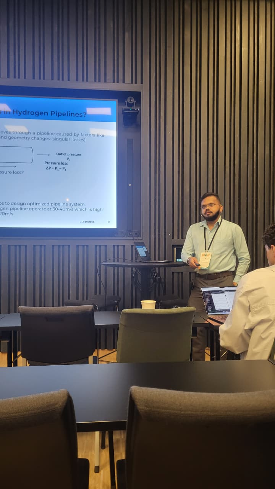

I model how hydrogen pipelines lose pressure — and wear out.
I'm Akshay Bambore, a PhD researcher studying pressure losses in gaseous hydrogen (GH₂) pipelines: CFD-based pipe-flow modelling, a wall erosion model, and how internal surface degradation from hydrogen embrittlement changes performance over years of operation.
From governing equations to an interactive simulator.

I'm a PhD researcher in the Department of Aero-Thermo-Mechanics at the Université libre de Bruxelles (ULB), working on pressure-loss modelling for gaseous hydrogen (GH₂) pipelines. My work covers 2D and 3D pipe-flow CFD, development of a wall erosion model, and how a pipeline's internal surface condition degrades over years or decades of operation under hydrogen embrittlement and pressure cycling.
Alongside the modelling, I built the browser-based pressure-loss simulator below — a working comparison of the Darcy-Weisbach and AGA models, recomputed live as you change the pipeline parameters. A dedicated GH₂ pipe pressure-loss test bench to validate these models against physical measurements is currently at the planning stage, not yet built.
Before the PhD, I completed a Master's in Aerospace Engineering at Sapienza University of Rome and a Bachelor's in Mechanical Engineering at VTU, Belgaum, then spent three years at Tata Consultancy Services as a manual software tester, working on validation rules, workflow automation, and defect tracking for enterprise Salesforce deployments.
Field & run log.
Research and industry experience spanning pipeline physics, icing-tunnel instrumentation, and enterprise software testing.
Joint PhD Researcher
- Determine total pressure losses in GH₂ pipelines and their evolution over years/decades of operation as internal surface condition degrades from hydrogen embrittlement and erosion.
- Run CFD and mathematical models for 2D and 3D pipe flow and pressure loss; develop a wall erosion model.
- Built a browser-based simulator comparing Darcy-Weisbach and AGA pressure-loss predictions in real time; a dedicated GH₂ pressure-loss test bench for physical validation is currently at the planning stage.
Funded by the Win4Excellence project — SPW Economy Employment Research (Walloon Region) and the Walloon Region Recovery Plan, agreement no. 2310142.
Research Intern
- Ran high-precision laser diffraction tests on a SMPATEC HELOS-VARIO/KR system to characterise droplet-size distribution across ten rainfall nozzles.
- Operated a Model Delta Autojet 2008+ spray control panel and PulsaJet nozzles to simulate light, moderate, and heavy rainfall, and fog.
Tata Consultancy Services
- Tested validation rules, workflow rules, approval processes, field updates, and email alerts against application requirements.
- Created and customised users; tested security and sharing rules across profiles, roles, and record types.
- Built business-facing reports and dashboards; ran unit and regression testing on individual modules and the full application.
- Tracked defects and prepared test-cycle progress reports in Azure DevOps, using BDD test cases where practical.
Academic background.
Scroll sideways for the full record.
GM Institute of Technology, Davangere
Bachelor of Mechanical Engineering coursework — core thermodynamics, fluid mechanics, and machine design.
Visvesvaraya Technological University (VTU)
Affiliating university — Bachelor of Mechanical Engineering degree awarded.
Masters in Aerospace Engineering
Aerospace engineering fundamentals with a focus on fluid dynamics and propulsion.
GH₂ pipeline pressure-loss simulator.
A browser port of my PyQt5 research tool. It integrates pressure loss along a pipeline two ways — Darcy-Weisbach with a Colebrook-White friction factor (Re-dependent), and the AGA fully-turbulent equation — using the same tabulated compressibility factor Z(P) and equation of state in both. Drag the sliders; everything recomputes instantly, entirely in your browser.
This panel is wired to a working Darcy-Weisbach vs AGA pressure-loss engine — live pressure, velocity, density and friction-factor profiles across the pipeline, recomputed as you move the sliders. Output is currently reserved for direct discussion rather than open publication. To run the full simulation, kindly get in touch and I'll walk you through it.
Research output.
Study, Modelling and Computing of Pressure Losses in GH₂ Pipelines
Study, Modelling and Computing of Pressure Losses in GH₂ Pipelines
Talks, posters & PhD activities.
Oral
- 20th SDEWES 2025 ConferenceSustainable Development of Energy, Water and Environment Systems
- PhD Day, ULB Brussels2025
- 3rd EPHYC 2026European PhD Hydrogen Conference · Trondheim, Norway
Poster
- Study, Modelling and Computing of Pressure Losses in GH₂ PipelinesULB Brussels · 2025
- Study, Modelling and Computing of Pressure Losses in GH₂ PipelinesGrenoble, France · 2025
Documents & certificates.
All files open in a new tab. Add each PDF to the repository root with the exact filename shown below.
Let's talk pipelines
— or PhD collaboration.
Research collaboration, questions about GH₂ pipeline modelling, or the simulator above — my inbox is open.